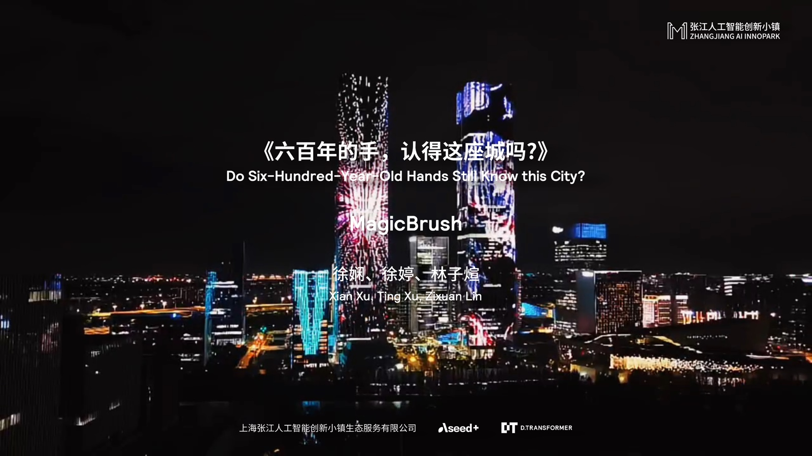
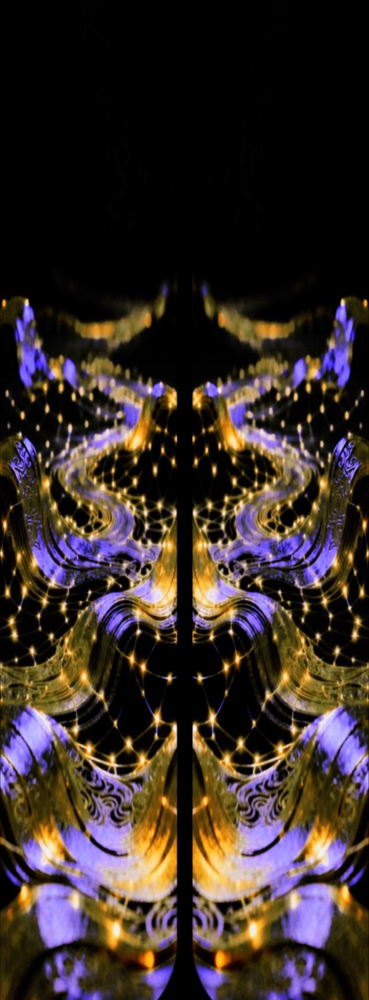
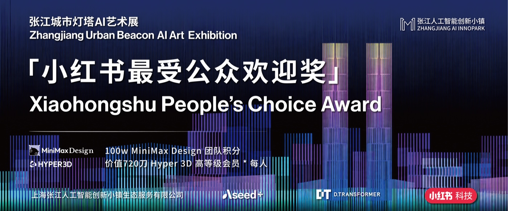

上海 · 张江双塔 / Zhangjiang, Shanghai
六百年的手，
认得这座城吗？
Do Six-Hundred-Year-Old Hands Still Know this City?

作品理念About the work
石库门的轮廓、崇明土布的经纬、徐行草编的纹理，与上海绒绣、海派剪纸和水墨一起，构成作品的六种上海文化母题。MagicBrush 将它们编排为十二组可独立循环的影像，让传统纹样在张江双塔的 LED 外立面上展开。黑色夜底托起明亮的色块，一束暖金色的光贯穿其间。
Shikumen doorways, Chongming homespun cloth and Xuhang straw weaving appear alongside Shanghai wool embroidery, Shanghai-style paper cutting and ink painting. MagicBrush translated these six motifs into twelve independent loops for the LED façades of the Zhangjiang twin towers. A thread of warm gold runs through the bright shapes against the night sky.
团队选取文化符号、设定画面、把握叙事并完成剪辑，再以生成式影像工具演绎光影。
The artists chose the motifs, directed the imagery and edited the sequences, using generative tools to animate the light.
展演现场On the towers
东塔影像East tower film
西塔封面West tower cover

创作团队MagicBrush
徐娴 · Xian Xu
徐婷 · Ting Xu
林子煊 · Zixuan Lin
林子煊负责分镜设计、生成式影像提示词、视觉素材调试及项目网站制作。
Zixuan Lin developed storyboards and prompts, refined visual materials and built the project website.
团队奖项Team award

MagicBrush 获小红书最受公众欢迎奖。
MagicBrush received the Xiaohongshu People's Choice Award.